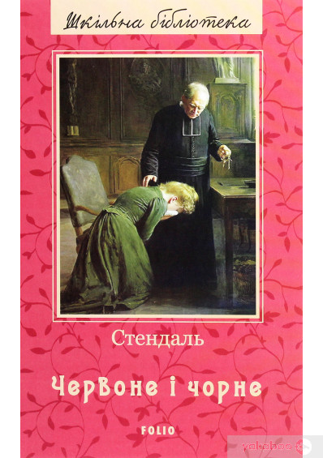
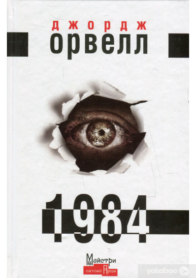

Привіт!
Ти зайшов на сторінку книжкового інтернет магазину
Цього тижня пропонуємо прочитати «Майстер і Марґарита»
Роман «Майстер і Марґарита» Михайло Булгаков почав писати 1928 чи 1929 року. Серед дійових осіб у першій редакції не було ані Майстра, ані Марґарити.
Learn More

Червоне і чорне
Сюжет першого великого прозового твору Анрі-Марі Бейль, відомий під псевдонімом Стендаль, узяв із реального життя. Родину, де прототип головного героя був учителем, Стендаль добре знав, як і місце, де відбулася драма. Дія роману охоплює майже 4 роки.
Learn More

1984
Бажаєте розібратися у реаліях сьогодення? Тоді радимо придбати книгу «1984». Дивно, але реалії твору, написаного у жанрі антиутопії більше 60 років тому, у деталях збігаються з тими, що ми спостерігаємо у наші дні.
Learn More